СТРОИТЕЛЬНЫЕ
НОРМЫ И ПРАВИЛА
АСБЕСТОЦЕМЕНТНЫЕ
КОНСТРУКЦИИ
СНиП 2.03.09-85
ГОССТРОЙ СССР
Москва
1988
РАЗРАБОТАНЫ ЦНИИСК им. В.А.
Кучеренко Госстроя СССР (кандидаты техн. наук Л.Н. Пицкель, Ю.Ц.
Гохберг, Н.Н. Поляков) при участии ЦНИИпромзданий, НИИСФ Госстроя
СССР, ЦНИИЭП жилища Госгражданстроя, ЦНИИЭПсельстроя Минсельстроя СССР,
ВНИИпроектасбестоцемента Минстройматериалов СССР.
ВНЕСЕНЫ ЦНИИСК им. В.А. Кучеренко Госстроя СССР.
ПОДГОТОВЛЕНЫ к утверждению
Главтехнормированием Госстроя СССР (Л.Н. Прохоров).
С введением в действие СНиП 2.03.09-85
«Асбестоцементные конструкции» с 1 января 1986 г. утрачивает силу «Инструкция
по проектированию асбестоцементных конструкций» (СН
265-77).
При пользовании
нормативным документом следует учитывать утвержденные изменения строительных
норм и правил и государственных стандартов, публикуемые в журнале «Бюллетень
строительной техники» Госстроя СССР и информационном указателе «Государственные
стандарты СССР» Госстандарта.
|
Госстрой СССР
|
Строительные нормы и правила
|
СНиП
2.03.09-85
|
|
Асбоцементные конструкции
|
Взамен
СН
265-77
|
Настоящие нормы распространяются
на проектирования асбестоцементных конструкций.
1.1. Асбестоцементные конструкции
следует проектировать в виде:
листов волнистых
(профилированных) и плоских;
плит и панелей каркасных;
плит и панелей бескаркасных
(трехслойных), в том числе с обрамлением по контуру;
оболочек сводчатых волнистого
профиля;
плит и панелей экструзионных1
многопустотных;
_____________
1 Под
экструзионными плитами, панелями и элементами подразумеваются плиты, панели и
элементы, изготавливаемые по экструзионной технологии.
элементов погонажных
экструзионных1 (швеллеров, плит подоконных и др.).
1.2. Конструкции должны
проектироваться с учетом их заводского изготовления.
1.3. Расчет асбестоцементных
конструкций должен удовлетворять требованиям СТ
СЭВ 384-76.
1.4. Асбестоцементные конструкции
следует рассчитывать по несущей способности (предельным состояниям первой
группы) и по деформациям (предельным состояниям второй группы).
1.5. Асбестоцементные конструкции
следует проектировать учетом нагрузок и воздействий
1.6. Величину нагрузок и
воздействий и их сочетания следует принимать в соответствии с требованиями СНиП 2.01.07-85.
1.7. Асбестоцементные каркасные,
бескаркасные и экструзионные плиты и панели необходимо рассчитывать па
температурные и влажностные воздействия.
1.8. При
проектировании асбестоцементных конструкций, эксплуатируемых в условиях
агрессивных сред, следует предусматривать защиту их и элементов крепления к
несущему каркасу здания от коррозии в соответствии с требованиями СНиП 2.03.11-85.
1.9. Плиты и панели каркасные и
экструзионные следует применять при температуре нагрева их поверхности не более
80 °С.
1.10. Плиты и панели бескаркасные
следует применять при температуре внутренней поверхности конструкции не более
30 °С и при температуре наружной поверхности конструкции
не более 80 °С.
1.11. Свободно
лежащие плоские и волнистые листы следует применять при температуре не более
100 °С.
|
Внесены
ЦНИИСК им. В.А. Кучеренко
Госстроя СССР
|
Утверждены
постановлением
Госстроя СССР
от 22 июля 1985 г. № 121
|
Срок
введения
в действие
1 января 1986 г.
|
2.1. Для асбестоцементных
конструкций следует применять плоские прессованные и непрессованные, а также
волнистые асбестоцементные листы.
2.2. Для обшивок плит и панелей
необходимо использовать асбестоцементные листы.
2.3. Для каркасов плит и панелей
следует применять деревянные, асбестоцементные, металлические или
железобетонные элементы, для обрамления бескаркасных плит и панелей -
деревянные, фанерные, асбестоцементные или металлические элементы.
2.4. Для плит и панелей каркасных
и экструзионных необходимо использовать минераловатный или стекловатный
утеплитель на синтетическом связующем, а также при наличии
технико-экономических обоснований другие теплоизоляционные материалы.
2.5. Для плит и панелей
бескаркасных, в том числе с обрамлением по контуру, в качестве заполнителя
следует применять пенопласты, типы которых приведены в справочном приложении 2.
2.6. Соединения асбестоцементных
обшивок с асбестоцементным каркасом и обрамлением необходимо выполнять на эпоксидных
клеях, расчетные характеристики которых приведены в справочном приложении 3.
2.7. Соединение асбестоцементных
обшивок с деревянным каркасом и обрамлением следует выполнять на оцинкованных
шурупах, оцинкованных стальных гвоздях, алюминиевых гвоздях или профилях.
2.8. Соединение асбестоцементных
обшивок с металлическим каркасом и обрамлением необходимо выполнять на винтах,
заклепках или болтах.
2.9. Соединение обшивок с
пенопластом в бескаркасных плитах и панелях следует производить на эпоксидных
или каучуковых клеях с расчетными сопротивлениями клеевых соединений сдвигу не
менее расчетных сопротивлений пенопластов сдвигу.
2.10. Материалы для
асбестоцементных конструкций должны удовлетворять требованиям действующих
государственных стандартов и технических условий.
3.1. Расчетные сопротивления
листового асбестоцемента следует принимать по табл.1, экструзионного
асбестоцемента - по табл.3.
При определении расчетных
сопротивлений листового асбестоцемента по табл.1 величину временного
сопротивления (предела точности) асбестоцемента изгибу следует принимать по
государственным стандартам или техническим условиям, при этом величину
временного сопротивления асбестоцемента плоских листов необходимо умножать на
коэффициент 0,9.
3.2. Расчетные сопротивления
асбестоцемента следует умножать на следующие коэффициенты условий работы:
а) для асбестоцементных
конструкций, проверяемых на воздействие постоянных, временных длительных и
кратковременных нагрузок, - на коэффициент 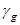
, равный:
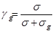
,
где  - нормальные
напряжения от действия постоянных, временных длительных и кратковременных
нагрузок;
- нормальные
напряжения от действия постоянных, временных длительных и кратковременных
нагрузок;
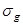
- нормальные напряжения от
действия постоянных и временных длительных нагрузок;
б) для конструкций, находящихся в
условиях атмосферного увлажнения (подверженных действию капельной влаги) и в
помещениях с мокрым или влажным режимом, принимаемым по СНиП II-3-79,
при защите наружных поверхностей конструкций влагонепроницаемыми покрытиями -
на коэффициент 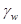
= 0,9; при отсутствии защиты для
конструкций из листового асбестоцемента - на = 0,8, для конструкций из
экструзионного асбестоцемента - на = 0,65;
в) для асбестоцементных
конструкций, находящихся в условиях длительного воздействия температуры свыше
40 °С, на коэффициент = 0,85.
3.3. Модули упругости и сдвига
листового асбестоцемента следует принимать по табл.2, экструзионного
асбестоцемента - по табл.4.
3.4. Модули упругости и сдвига
асбестоцементных конструкций, проверяемых на действие только постоянных и
временных длительных нагрузок (без учета кратковременных нагрузок), следует
умножать на коэффициент условий работы = 0,65.
3.5. Коэффициент поперечной
деформации  асбестоцемента
следует принимать равным 0,2.
асбестоцемента
следует принимать равным 0,2.
3.6. Коэффициент температурного
линейного расширения асбестоцемента 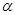
следует принимать по табл.5.
3.7.
Влажностные относительные линейные деформации листового и экструзионного
асбестоцементов  следует определять по черт.1, при этом значения , полученные по
графику, следует умножать на коэффициент
следует определять по черт.1, при этом значения , полученные по
графику, следует умножать на коэффициент 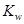
, принимаемый для листового непрессованного
и экструзионного асбестоцементов на портландцементе равным 1,0, для
прессованного асбестоцемента - 0,7, для экструзионного автоклавного
асбестоцемента - 0,6.
При определении для
асбестоцемента, защищенного от увлажнения, значения , полученные по графику,
необходимо умножать дополнительно на коэффициент 0,75.
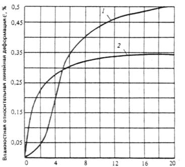
Черт. 1.
Зависимость влажностных относительных линейных деформаций листового 1 и
экструзионного 2 асбестоцементов от их влажности W
3.8. Расчетные характеристики
пенопластов следует принимать по табл.1 справочного приложения 2.
Расчетные сопротивления, модули
упругости и сдвига пенопластов, находящихся в условиях длительного действия
разных температур, следует умножать на коэффициент условий работы 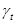
, приведенный в табл.2
справочного приложения
2.
3.9. Расчетные сопротивления
клеевых соединений асбестоцемента с асбестоцементом на эпоксидных клеях и
модули сдвига эпоксидных клеев следует принимать по табл.1 и 2 справочного приложения 3.
Расчетные характеристики клеевых
соединений и клеев при действии повышенных температур следует умножать на
коэффициенты условий работы  , приведенные в табл.3 справочного приложения 3.
, приведенные в табл.3 справочного приложения 3.
Таблица 3
|
Вид
напряженного состояния асбестоцемента
|
Обозначение
|
Расчетные сопротивления
экструзионного асбестоцемента при временном сопротивлении (пределе
прочности) изгибу, МПа (кгс/см2)
|
|
16(160)
|
18(180)
|
20(200)
|
22(220)
|
24(240)
|
|
Изгиб в
направлении конструкции:
|
|
|
|
|
|
|
|
продольном
|
Rm
|
11(110)
|
12(120)
|
14(140)
|
15(150)
|
17(170)
|
|
поперечном
|
Rmt
|
7(70)
|
7,5(75)
|
8,5(85)
|
10(100)
|
12(120)
|
|
Растяжение
осевое в направлении конструкции:
|
|
|
|
|
|
|
|
продольном
|
Rt
|
5,5(55)
|
6(60)
|
7(70)
|
9(90)
|
10(100)
|
|
поперечном
|
Rtt
|
3,8(38)
|
4,2(42)
|
4,7(47)
|
6(60)
|
6,7(67)
|
|
Сжатие осевое
в продольном и поперечном направлениях конструкции
|
Rc
|
21(210)
|
23(230)
|
25(250)
|
27(270)
|
30(300)
|
|
Срез поперек
плоскости наружной грани конструкции
|
Rs
|
3,2(32)
|
3,5(35)
|
4(40)
|
4,4(44)
|
4,8(48)
|
Таблица 4
|
Характеристика
|
Обозначение
|
Модули
упругости и сдвига экструзионного асбестоцемента при временном сопротивлении
(пределе прочности) изгибу, МПа (кгс/см2)
|
|
16(160)
|
18(180)
|
20(200)
|
22(220)
|
24(240)
|
|
Модуль
упругости
|
Е×10-5
|
0,09(0,9)
|
0,11(1,1)
|
0,13(1,3)
|
0,14(1,4)
|
0,15(1,5)
|
|
Модуль сдвига
|
G×10-4
|
0,41(4,1)
|
0,50(5,0)
|
0,59(5,9)
|
0,64(6,4)
|
0,68(6,8)
|
Таблица 5
|
Температура,
°С
|
Значение 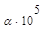 , °С, при влажности
асбестоцемента W, %
|
|
W £ 12
|
W > 12
|
|
0 и ниже
|
1,1
|
2
|
|
Выше 0
|
1,1
|
1,1
|
4.1. Проверку прочности элементов
асбестоцементных конструкций следует выполнять исходя из условий:
а) для обшивок каркасных и
бескаркасных или полок экструзионных плит и панелей:
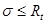
; (1)
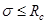
; (2)
б) для каркаса ребер каркасных
или экструзионных плит и панелей:
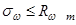
; (3)
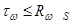
; 4)
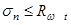
; (5)
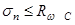
; (6)
в) для заполнителя бескаркасных
панелей
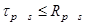
; (7)
г) для клеевых соединений обшивок
с каркасом
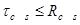
; (8)
д) для плоских и волнистых
листов:
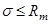
; (9)
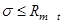
; (10)
где Rm - расчетные сопротивления
материала
Rt, Rс - обшивок по изгибу, растяжению
и сжатию, принимаемые для асбестоцемента по табл.1 и 3;
Rps - расчетные сопротивления сдвигу
заполнителя бескаркасных плит панелей, принимаемые для пенопластов по табл.1
справочного приложения
2;
Rps - расчетные сопротивления сдвигу
клеевого соединения обшивок с каркасом или заполнителем, принимаемые для
эпоксидных клеев по табл.1 справочного приложения 3.
В формулах (1) - (10) напряжения и  являются суммарными напряжениями от
действия нагрузок и воздействий и их сочетаний.
являются суммарными напряжениями от
действия нагрузок и воздействий и их сочетаний.
4.2. Напряжения в элементах
каркасных плит и панелей (черт.2) следует определять по формулам:
в обшивках наружных (1) и
внутренних (2):
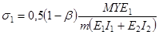
; (11)
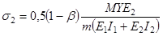
; (12)
в каркасе:
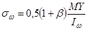
; (13)
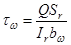
; (14)
в клеевых соединениях обшивок с
каркасом
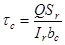
. (15)
В формулах (11) - (15):
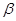
- коэффициент,
определяемый по формуле (19);
m - коэффициент, учитывающий
распределение усилий между каркасом и обшивками и определяемый по п.4.6. и 4.7;
Y - расстояние от нейтральной оси
конструкции, положение которой определяется с учетом податливости соединений по
п.4.4,
до рассматриваемого сечения волокна;
I1, I2, Sr - моменты инерции поперечного
сечения обшивок 1 и 2 и статический момент сдвигаемой части поперечного сечения
конструкции, вычисляемые с учетом указаний п.4.3, относительно нейтральной
оси, положение которой определяется по п.4.4;
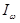
- момент инерции поперечного
сечения каркаса относительно нейтральной оси, положение которой определяется по
п.4.4;
Ir - приведенный (к материалу
каркаса) момент инерции сечения конструкции, определяемый по формуле
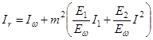
; (16)
bc - расчетная ширина клеевых швов,
принимаемая равной 0,5 суммарной ширины швов.
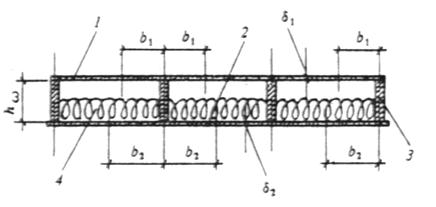
Черт. 2. Поперечное сечение
каркасной плиты
1, 2 -
асбестоцементные обшивки; 3 - элементы каркаса плиты; 4 -
утеплитель.
4.3. При
расчете каркасных плит и панелей следует учитывать часть площади поперечного
сечения обшивок, принимая их ширину в каждую сторону от вертикальной оси ребра
каркаса (см. черт. 2) равной:
для сжатых обшивок
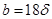
, (17)
где 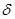
- толщина сжатой обшивки;
для растянутых обшивок 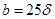
, (где 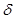
- толщина
растянутой обшивки), но не более половины расстояния между ребрами каркаса.
4.4. При
расчете каркасных плит и панелей положение нейтральной оси сечения конструкции
с учетом податливости соединений обшивок с каркасом следует определять по
формуле
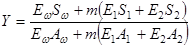
, (18)
где S1, S2, 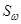
- статические моменты обшивок 1 и
2 и каркаса, определяемые с учетом указаний п.4.3, относительно произвольной
оси;
А1, А2, 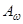
- площади поперечных сечений
обшивок 1 и 2, определяемые с учетом указаний п.4.3. и площадь каркаса.
4.5. При расчете каркасных плит и
панелей коэффициент следует определять по формуле
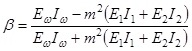
. (19)
4.6. При
расчете каркасных плит и панелей коэффициент m при клеевом соединении
асбестоцементных обшивок с асбестоцементным каркасом следует определять по
формуле
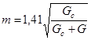
, (20)
где Gc - модуль сдвига клея,
принимаемый для эпоксидных клеев по табл.2 справочного приложения 3;
G - модуль сдвига материала
обшивок плит и панелей, принимаемый для асбестоцемента по табл.2.
4.7. При расчете каркасных плит и
панелей коэффициент m при соединении обшивок с каркасом с помощью
металлических элементов (шурупов, винтов, болтов, или заклепок) следует
определять по формуле
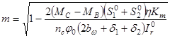
, (21)
где MC, MB - изгибающие моменты в
начальном B и конечном С сечениях
(при 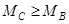
)
рассматриваемого участка с однозначной эпюрой поперечных сил;
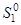
, 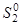
- приведенные (к материалу
каркаса) статические моменты обшивок 1 и 2, вычисляемые с учетом указаний п.4.3,
относительно нейтральной оси, положение которой определяется по формуле (24);
 - коэффициент, определяемый по
черт.3
в зависимости от диаметра элемента соединения d;
- коэффициент, определяемый по
черт.3
в зависимости от диаметра элемента соединения d;
Km - коэффициент, принимаемый
для элементов соединения из стали равным 1,0, из алюминия - 1,1;
nc - число принимаемых срезов
элементов соединения в каждом шве на рассматриваемом участке с однозначной
эпюрой поперечных сил;
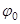
- угол поворота каркаса
конструкции, определяемый без учета обшивок, на рассматриваемом участке в месте
действия минимального момента;
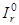
- приведенный (к материалу
каркаса) момент инерции сечения конструкции, вычисляемый относительно
нейтральной оси, положение которой вычисляется по формуле (24).
При расчете свободно опертых
каркасных плит и панелей на действие равномерно распределенной нагрузки
коэффициент m следует определять по формуле
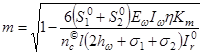
, (22)
где 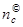
- число срезов элементов
соединений в каждом шве на половине пролета.
При этом следует выполнять
требования п.4.8.
4.8. Подбор
сечения каркасных плит и панелей следует производить из условия приближения
значения m к значению m0, определяемому по формуле
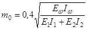
. (23)
При расчете каркасных плит и
панелей коэффициент m следует принимать: если 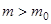
- равным m0, если 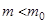
- равным m.
4.9. При расчете каркасных плит и
панелей положение нейтральной оси сечения конструкции без учета податливости
соединений обшивок с каркасом необходимо определять по формуле
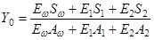
. (24)
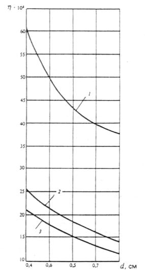
Черт. 3. График для определения
коэффициента для
плит и панелей с деревянным 1, алюминиевым 2 и стальным 3 каркасами
4.10. Расчет элемента соединения
обшивок с каркасом следует производить из условия
, (25)
где Ts определяется по формулам (62),
(64) - (65).
4.11. Расчет плит и панелей на
деревянных каркасах при соединении обшивок с каркасом шурупами следует
производить с учетом работы обшивок, при соединении обшивок с каркасом
оцинкованными стальными гвоздями или алюминиевыми гвоздями и профилями - без
учета работы обшивок.
4.12. Напряжения в элементах
экструзионных плит и панелей (черт.4) следует определять:
в полках ; (26)
в ребрах , (27)
где I, S - момент инерции сечения и
статический момент сдвигаемой части сечения конструкции относительно
нейтральной оси;
Kh - коэффициент, принимаемый для
плит и панелей высотой от 60 до 140 мм равным 1, высотой от 160 до 180 мм -
равным 0,8.
Черт. 4. Поперечное сечение
экструзионной панели
1, 2 -
полки панели; 3 - ребра панели; 4 - утеплитель.
4.13. Напряжения в элементах
бескаркасных плит и панелей (черт.5) следует определять:
в обшивках:
; (28)
; (29)
в заполнителе:
, (30)
где I - приведенный (к материалу
обшивки 1) момент инерции сечения конструкции, определяемый без учета
заполнителя и обрамления.
Черт. 5. Поперечное сечение
бескаркасной панели с обрамлением
1, 2 -
асбестоцементные обшивки; 3 - элементы обрамления панели; 4 -
заполнитель (пенопласт); 5 - клеевой шов
4.14. Напряжения в волнистых
асбестоцементных листах, уложенных в кровлях и настилах по одно- или
двухпролетной схеме, следует определять при действии:
равномерно распределенной
нагрузки - по формуле
; (31)
сосредоточенной нагрузки,
приложенной к гребню любой из средних волн, - по формуле
; (32)
где С -
коэффициент, определяемый по черт.6 в зависимости от и (где , l - шаг волны и пролет волнистого
листа; Ik, Id - моменты инерции волнистого и
плоского листов на единицу ширины); для листов, опирающихся по двухпролетной
схеме, коэффициент С следует умножать на 0,9;
- коэффициент условий работы,
принимаемый при применении листов в кровлях в случае отсутствия чердачного
перекрытия равным 0,75, в остальных случаях - 1;
K1 - коэффициент, определяемый по черт.7
(где и
hk - толщина листа и высота волны
листа);
Wk - момент сопротивления
сечения волнистого асбестоцементного листа относительно нейтральной оси,
определяемый по формулам (33) или (34).
Черт. 6. График для определения
коэффициента С
Черт. 7.
График для определения коэффициента K1
4.15. Момент сопротивления
волнистого листа Wk следует определять по формуле
; (33)
на сосредоточенную нагрузку - по
формуле
, (34)
где ; (35)
n - число волн в листе.
4.16. При расчете
асбестоцементных конструкций температурные и влажностные воздействия следует
относить к кратковременным воздействиям.
4.17. Напряжения в элементах
однопролетных свободно опертых каркасных плит и панелей с двумя обшивками, а
также экструзионных плит и панелей от температурных или влажностных воздействий
следует определять по формулам:
в наружных 1 и внутренних 2
обшивках (полках):
; (36)
; (37)
в каркасе (ребрах) со стороны
наружных 1 и внутренних 2 обшивок (полок):
; (38)
, (39)
где
; (40)
; (41)
; (42)
- расстояние от нейтральной оси
конструкции, положение которой определяется без учета податливости соединений
по формуле
(24), до рассматриваемого волокна;
-
коэффициенты, определяемые по черт.8 в зависимости от значения
,
где h1, h2 - расстояние от нейтральной оси
до середины обшивок (полок) 1 и 2;
- температурные или влажностные
относительные линейные деформации обшивок (полок) 1 и 2, определяемые по формулам (43),
(44) и по п.4.19.;
- температурные относительные
линейные деформации крайних волокон каркаса, примыкающих к обшивкам (полкам) 1
и 2, определяемые по формулам (45) и (46).
Черт. 8.
График для определения коэффициентов и
4.18. При расчете ограждающих
конструкций отапливаемых зданий в стадии эксплуатации на температурные
воздействия нормативные значения и следует определять по формулам:
; (43)
;  (44)
(44)
; (45)
; (46)
где ; (47)
; (48)
, , - коэффициенты температурного
линейного расширения материала наружных 1 и внутренних 2 обшивок
(полок) и каркаса (ребер), принимаемые для асбестоцемента по табл.5;
tew, tec - cреднесуточные температуры наружного воздуха в теплое
tew и холодное tec время года, принимаемые в соответствии
с требованиями СНиП
2.01.07.-85;
tiw, tis - температуры внутреннего
воздуха помещений в теплое tiw и холодное tis время года, принимаемые по ГОСТ
12.1.005-76 или по строительному заданию на основании технологических
решений;
t0 - температура, при которой
происходит изготовление конструкций, принимаемая равной минус 17 °С.
При расчете плит покрытий на
сочетание нагрузок, включающее снеговую нагрузку и температурные воздействия,
величину  t1 следует принимать равной минус
17 °С.
t1 следует принимать равной минус
17 °С.
При определении расчетных
значений ,
и , нормативные
величины t1 и t2, полученные по формулам (47)
и (48), умножают на коэффициент надежности по
нагрузке .
4.19 При
расчете конструкций на влажностные воздействия нормативные значения влажностных
деформаций обшивок (полок) и следует определять для асбестоцемента по п.
3.7 в
зависимости от значений начальной W0 и конечной Wk влажности материала.
Значение W0 для асбестоцемента следует
принимать:
для листового - равным 8 % по
массе;
для экструзионного - равным 3,5 %
по массе.
Значения Wk для асбестоцемента необходимо
определять по табл.6.
При определении расчетных
значений влажностных деформаций их нормативные величины следует умножать на коэффициент
надежности по нагрузке .
Таблица 6
|
Элементы
плиты или панели
|
Вид
влажностного воздействия
|
Значение
конечной влажности асбестоцемента Wk
|
|
Наружная
обшивка (полка)
|
Воздушное
увлажнение
|
Соответствующее
значению
|
|
Воздушное
высушивание
|
Соответствующее
значению
|
|
Увлажнение
капельной влагой
|
Равное Wmax
|
|
Внутренняя
обшивка (полка)
|
Воздушное
увлажнение или высушивание
|
Соответствующее
значению
|
|
Обозначения,
принятые в табл.6:
Wk - конечная
влажность асбестоцемента, соответствующая данному значению относительной
влажности воздуха и определяемая по черт.9;
, - максимальная
и минимальная среднемесячная относительная влажность наружного воздуха,
определяемая по СНиП 2.01.01-82;
Wmax - максимальная
влажность асбестоцемента, принимаемая для асбестоцемента равной 19 %, для
экструзионного асбестоцемента - 20 %;
- относительная
влажность воздуха в помещении здания, принимаемая по ГОСТ
12.1.005-76
или по строительным заданиям на основании технологических решений.
|
Черт. 9.
Зависимость влажности W листового 1 и экструзионного 2
асбестоцементов от относительной влажности воздуха
4.20. Напряжения в элементах
однопролетных свободно опертых бескаркасных плит и панелей с двумя обшивками от
температурных и влажностных воздействий следует определять по формулам:
в наружных 1 и внутренних 2
обшивках:
; (49)
; (50)
в заполнителе
; (51)
где Gp - модуль сдвига материала
заполнителя, принимаемый для пенопластов по табл.1 справочного приложения 2.
4.21. Напряжения в
центрально-сжатых экструзионных конструкциях следует определять по формуле
, (52)
где N - продольная сила;
 - коэффициент продольного
изгиба, принимаемый по черт.10 в зависимости от гибкости элемента
- коэффициент продольного
изгиба, принимаемый по черт.10 в зависимости от гибкости элемента  ;
;
Abr - площадь поперечного сечения
брутто.
Предельное значение гибкости для конструкций
следует принимать не более 100.
Черт. 10.
График определения коэффициента продольного изгиба
4.22. Расчетную длину конструкции
l0, загруженной продольной силой,
следует определять путем умножения геометрической длины элемента на коэффициент
 ,
равный:
,
равный:
при шарнирно закрепленных концах
элемента - 1,0;
при одном шарнирно закрепленном и
другом защемленном конце - 0,8;
при одном защемленном и другом
свободном нагруженном конце - 2,2;
при обоих защемленных концах -
0,65.
В случае равномерно
распределенной по длине элемента осевой нагрузкой коэффициент следует
принимать равным:
при обоих шарнирно закрепленных
концах - 0,73;
при одном защемленном и другом
свободном конце - 1,2.
4.23. Напряжения в
сжато-изогнутых экструзионных конструкциях следует определять по формулам:
в крайних растянутых волокнах
; (53)
в крайних сжатых волокнах
; (54)
где An - площадь поперечного сечения
нетто элемента;
- коэффициент, учитывающий
дополнительный момент от продольной силы при деформации элемента:
; (55)
W - расчетный момент сопротивления
поперечного сечения элемента.
4.24. Прогибы и перемещения
элементов конструкций не должны превышать предельных, установленных СНиП 2.01.07-85.
(Измененная редакция).
4.25. При определении прогиба
асбестоцементных каркасных плит и панелей изгибную жесткость следует определять
по формуле
. (56)
4.26. При определении прогиба
асбестоцементных каркасных плит и панелей изгибную жесткость обшивок D1,2 (на единицу ширины) необходимо
определять по формуле
. (57)
4.27. При определении прогиба
асбестоцементных экструзионных плит и панелей изгибную жесткость следует
принимать по моменту инерции сечения брутто.
4.28. При определении прогиба
бескаркасных плит и панелей, в том числе с обрамлением их по контуру, изгибную
жесткость следует определять по формуле
, (58)
где K2 - коэффициент, определяемый по
формуле
, (59)
где b - ширина плиты и панели.
4.29. Максимальный прогиб
однопролетных свободно опертых каркасных плит и панелей с двумя обшивками от
температурных или влажностных воздействий следует определять по формуле
, (60)
где M - момент от нормативных значений
температурных или влажностных воздействий, определяемый по формуле
. (61)
5.1. При расчете соединений
обшивок с деревянным каркасом расчетное усилие Ts, которое может быть воспринято
одним элементом соединения из условия смятия материала каркаса, необходимо
определять по формуле
, (62)
где ; (63)
Es - модуль упругости материала
элемента соединения.
5.2. При расчете соединений
обшивок с металлическим каркасом расчетное усилие Ts, которое может быть воспринято
одним элементом соединения из условия смятия материала каркаса, необходимо
определять по формуле
, (64)
где - толщина полки металлического
каркаса.
5.3. При расчете соединений
обшивок с каркасом расчетное усилие Ts, которое может быть воспринято
одним элементом соединения из условия смятия материала обшивок, необходимо
определять по формуле
. (65)
5.4. При расчете соединений
обшивок с металлическим каркасом расчетное усилие Ts, которое может быть воспринято
одним элементом соединения из условия его среза, необходимо определять по
формуле
. (66)
6.1. Асбестоцементные плиты и
панели следует применять при условии защиты конструкций от коррозии в
соответствии с указаниями п.1.8 в наружных ограждениях зданий - при
влажности внутреннего воздуха помещений не более 75 %, во внутренних
ограждениях - при влажности не более 85 %.
6.2. При проектировании
асбестоцементных конструкций для зданий, возводимых в районах с температурой
наружного воздуха наиболее теплых и холодных суток выше 25 °С
и ниже минус 40 °С, следует применять прессованные
асбестоцементные листы.
При проектировании каркасных плит
и панелей для внутренних ограждений зданий с мокрым режимом помещений следует
применять прессованные асбестоцементные листы.
6.3. Бескаркасные плиты и панели
с утеплителем из пенопластов следует применять в ограждениях зданий с неагрессивной
или слабо агрессивной средой, с сухим и нормальным режимами помещений.
Бескаркасные плиты и панели
следует применять в ограждениях зданий с влажным режимом помещений только при
наличии пароизоляции.
6.4. В каркасных и бескаркасных
плитах и панелях следует применять асбестоцементные листы с влажностью не более
8 % по массе. В экструзионных плитах и панелях влажность асбестоцемента должна
быть не более 4,5 % по массе.
В каркасных и экструзионных
плитах и панелях влажность минераловатного утеплителя не должна превышать 8 %
по массе.
6.5. В проектах следует указывать
условные обозначения и сорт асбестоцементных листов в соответствии с
государственными стандартами и техническими условиями и принятые величины
временного сопротивления (пределы прочности) изгибу.
6.6. Асбестоцементные листы для
конструкций следует принимать толщиной не менее 6 мм.
6.7. При проектировании
асбестоцементных каркасных плит и панелей расстояние между осями шурупов, болтов
или заклепок следует принимать не менее 30d (где d - диаметр шурупа, болта или
заклепки), но не менее 120 мм и не более - для плит покрытий, не более - для панелей
стен (где -
толщина асбестоцементной обшивки). Расстояние от оси шурупа, болта или заклепки
до края асбестоцементной обшивки должно быть не менее 4d и не более 10d.
6.8. В каркасных асбестоцементных
плитах и панелях, в которых каркас соединяется с асбестоцементными листами на
клею, на концевых участках каркасов следует предусматривать установку по одному
болту, винту или заклепке.
6.9. При проектировании
асбестоцементных плит и панелей с деревянным каркасом и обрамлением диаметр
отверстий в обшивках под шурупы следует выполнять на 1 - 1,5 мм более диаметра
шурупа.
При проектировании
асбестоцементных плит с деревянным каркасом не допускается гвоздевое соединение
обшивок с каркасом.
6.10. При проектировании
асбестоцементных плит и панелей с металлическим каркасом и обрамлением диаметр
отверстий в обшивках следует выполнять на 1 - 2 мм более диаметра стержня
элемента соединения или устанавливать упругие прокладки между каркасом и
обшивками. Под головки элементов соединений следует устанавливать шайбы.
6.11. При проектировании
бескаркасных плит и панелей фенолформальдегидные пенопласты следует применять
только в конструкциях с обрамлением по контуру.
6.12. В бескаркасных плитах и
панелях без обрамления по контуру открытая поверхность утеплителя должна быть
защищена от увлажнения гидроизоляционными покрытиями.
6.13. При проектировании
бескаркасных конструкций клеевые соединения обшивок с пенопластовым
заполнителем следует выполнять по всей площади соединения.
6.14. В бескаркасных плитах и
панелях с обрамлением по контуру шаг шурупов, винтов и заклепок, соединяющих
обшивки с обрамлением, следует принимать не менее 30 d, но не менее 120 мм и не более
500 мм, для плит и панелей с утеплителем из фенолформальдегидного пенопласта -
не более 300 мм. Расстояние от оси шурупа (винта, заклепки) до края обшивки
следует принимать не менее 4 d и
не более 10 d.
6.15. При проектировании
креплений и примыканий плит и панелей, а также плоских и волнистых листов к
элементам несущих конструкций зданий следует, как правило, обеспечивать свободу
расчетных температурно-влажностных деформаций асбестоцементных конструкций.
Проектировать асбестоцементные
конструкции в случае стеснения их температурно-влажностных деформаций следует с
учетом возникающих при этом усилий.
6.16. Для уменьшения влажностных
деформаций следует предусматривать гидрофобизацию или защиту водостойкими
красками поверхностей асбестоцементных конструкций.
В необходимых случаях на
поверхность плит и панелей следует наносить пароизоляцию.
6.17. При проектировании
креплений бескаркасных плит длину опорной части плиты следует предусматривать
по расчету, но не менее 4 см.
6.18. При проектировании
креплений бескаркасных плит и панелей к элементам несущих конструкций зданий
следует обеспечивать прикрепление к этим элементам обеих обшивок.
6.19. Асбестоцементные плиты
покрытий, имеющие деревянный или металлический каркас, а также экструзионные
плиты могут использоваться в качестве элементов жесткости (связей). При этом
конструктивное решение плит и их креплений к несущим конструкциям зданий должно
обеспечить устойчивость элементов каркаса здания и восприятия нагрузок и
воздействий.
6.20. Установку крепежных
элементов на асбестоцементных плитах и панелях необходимо производить в заранее
рассверливаемые отверстия. Пробивка отверстий запрещается.
6.21. Не допускается приложение к
асбестоцементным листам, обшивкам каркасных и бескаркасных плит и панелей
сосредоточенных нагрузок (от трубопроводов, оборудования и т.п.). Приложение
таких нагрузок допускается к экструзионным плитам и панелям, а также к каркасам
плит и панелей.
6.22. Конструктивное решение
торцов экструзионных плит и панелей должно обеспечивать надежную защиту
утеплителей от увлажнения и выпадения.
6.23. Продольные и поперечные
стыки между плитами покрытий и между стеновыми панелями утеплять и
герметизировать в нижней и верхней частях.
6.24. При проектировании стен из
асбестоцементных листов или панелей следует, как правило, предусматривать
цоколь из других материалов высотой не менее 0,3 м от отметки отмостки.
6.25. При расчете
асбестоцементных конструкций на усилия, возникающие при транспортировании и
монтаже, нагрузку от собственной массы следует умножать на коэффициент
перегрузки, равный 3,0.
|
Назначение
конструкций
|
Типы
конструкций
|
|
рекомендуемые
|
допустимые
|
|
Кровли
|
Листы
волнистые
|
-
|
|
Покрытия:
|
|
|
|
неутепленные
|
Листы
волнистые
|
Плиты
каркасные экструзионные
|
|
утепленные
|
Плиты
каркасные, бескаркасные, в том числе с обрамлением по контуру, плиты
экструзионные
|
-
|
|
Стены:
|
|
|
|
неутепленные
|
Листы
волнистые, панели каркасные с плоскими листами
|
Листы плоские,
закрепляемые на деревянных или металлических элементах здания, панели
экструзионные
|
|
утепленные
|
Плиты
каркасные, бескаркасные, в том числе с обрамлением по контуру, панели
экструзионные
|
-
|
|
Перегородки
|
Панели
каркасные, экструзионные; листы плоские, закрепляемые на деревянных,
металлических и асбестоцементных элементах здания
|
Панели
бескаркасные, в том числе и с обрамлением по контуру
|
|
Подвесные
потолки
|
Плиты
каркасные, бескаркасные, экструзионные, в том числе с обрамлением по контуру
|
Листы плоские,
закрепляемые на металлических элементах здания
|
|
Перекрытие
транспортерных галерей
|
Оболочки
сводчатые волнистого профиля
|
Листы плоские
или волнистые, закрепляемые на металлических или деревянных элементах
сооружения
|
|
Стойки
|
-
|
Изделия
экструзионные
|
ПЕНОПЛАСТЫ
1. Плиты из полистирольного
пенопласта марки ПСБ или ПСВ-С.
2. Полистирольный пенопласт марки
ПСБ, изготавливаемый термоимпульсным методом в полости конструкции из
вспенивающегося полистирола марки ПСБ или ПСВ-С.
Таблица 1
Расчетные
характеристики пенопластов
|
Марка
пенопласта
|
Объемная
масса, кг/м3
|
Расчетное
сопротивление сдвигу Rps, МПа (кгс/см2)
|
Модуль сдвига
Gp , МПа (кгс/см2)
|
|
ПСБ и ПСБ-С
(плиты)
|
30
|
0,025 (0,25)
|
1,2 (12)
|
|
40
|
0,03 (0,3)
|
1,5(15)
|
|
ПСБ и ПСБ-С (вспененный
в полости панели термоимпульсным методом)
|
40
|
0,04 (0,4)
|
2,2 (22)
|
|
60
|
0,05 (0,5)
|
3,8 (38)
|
|
ПСБ-М
|
140-180
|
0,07 (0,7)
|
8,8 (88)
|
|
ФРП-1
|
90
|
0,01 (0,1)
|
2,3 (23)
|
|
«Виларес-400»
|
75
|
0,022 (0,22)
|
1,1 (11)
|
|
ППУ-317
|
60
|
0,06 (0,6)
|
1,8 (18)
|
|
ППБ
|
90
|
0,035 (0,35)
|
2,5 (25)
|
|
110
|
0,045 (0,45)
|
3,5 (35)
|
|
130
|
0,055 (0,55)
|
4,5 (45)
|
3. Полистирольный пенопласт с
минеральным наполнителем марки ПСБ-М, изготавливаемый термоимпульсным методом в
полости конструкции из сырьевой смеси, содержащей вспенивающийся полистирол
марки ПСВ или ПСВ-С, легкий минеральный наполнитель (вспученный перлитовый
песок), связующее (карбамидоформальдегидную смолу марки КФ-МТ) и отвердитель
(хлористый аммоний).
4. Фенолформальдегидный
пенопласт, вспениваемый в полости конструкции, марки ФРП-1 или «Виларес-400».
5. Полиуретановый пенопласт,
вспениваемый в полости конструкции, марки ППУ-317.
6. Новолачный фенольный пенопласт
(перлитопластберон) марки ППБ, вспениваемый в полости конструкции из сырьевой
смеси, содержащий новолачную фенолформальдегидную смолу СФ-010, вспученный
перлитовый песок, уротропин технический, порофор.
Таблица 2
Коэффициенты
условий работы пенопластов
|
Марка
пенопласта
|
При
температуре, °С
|
|
20
|
40
|
60
|
80
|
|
ПСБ, ПСБ-С,
ПСБ-М
|
1
|
0,8
|
0,6
|
0,4
|
|
ФРП-1,
«Виларес-400»
|
1
|
0,85
|
0,75
|
0,65
|
|
ППУ-317
|
1
|
0,9
|
0,85
|
0,6
|
|
ППБ
|
1
|
0,95
|
0,9
|
0,85
|
Примечание.
Для промежуточных значений температур коэффициент условий работы определяется
линейной интерполяцией.
Таблица 1
Расчетные сопротивления сдвигу
|
Вид
асбестоцемента
|
Расчетное
сопротивление сдвигу RCS, МПа (кгс/см2)
|
|
Непрессованный
|
2,5 (25)
|
|
Прессованный
|
3,0 (30)
|
Таблица 2
Модуль
сдвига эпоксидного клея
|
Марка
клея
|
Значения
модуля сдвига GC, МПа (кгс/см2)
|
|
ЭПП-1
|
2800 (28000)
|
|
К-153
|
2100 (21000)
|
Таблица 3
Коэффициенты
условий работы
|
Значение
|
При
температуре асбестоцемента, °С
|
|
1
|
20
|
|
0,8
|
40
|
|
0,6
|
60
|
|
0,3
|
80
|
Примечание. Для
промежуточных значений температуры коэффициент условий работы определяется
линейной интерполяцией.
M - изгибающий момент;
N - продольная сила;
Q - поперечная сила;
P - сосредоточенная сила;
Rm - расчетное сопротивление
материала обшивки изгибу;
Rt - расчетное сопротивление
материала обшивки растяжению;
Rc - расчетное сопротивление
материала обшивки сжатию;
Rp - расчетное сопротивление
материала обшивки смятию;
- расчетное сопротивление
материала каркаса изгибу;
- расчетное сопротивление
материала каркаса растяжению;
- расчетное сопротивление
материала каркаса сжатию;
- нормативное сопротивление
материала каркаса сжатию;
- расчетное сопротивление
материала каркаса сдвигу;
Rlp - расчетное сопротивление
материала каркаса местному смятию при плотном касании;
Rps - расчетное сопротивление
сдвигу заполнителя;
Rcs - расчетное сопротивление
сдвигу клеевого соединения;
Rbs - расчетное сопротивление
материала элемента соединения срезу;
- коэффициент условий работы;
E1, E2 - модуль упругости материала
обшивки;
- модуль упругости материала
каркаса;
G - модуль сдвига материала
обшивки;
Gp - модуль сдвига материала
заполнителя;
Gс - модуль сдвига клея;
- коэффициент поперечной
деформации материала;
- коэффициент температурного
линейного расширения материала;
- температурная или влажностная
относительная линейная деформация обшивки;
W - влажность материала;
l - пролет конструкции;
- толщина обшивки;
- высота каркаса;
- суммарная ширина ребер каркаса
или полок;
h0 - высота заполнителя;
bp - ширина заполнителя;
An - площадь поперечного сечения
нетто;
Ab r - площадь поперечного сечения
брутто;
- гибкость элемента;
- нормальные напряжения в
обшивках или полках плит и панелей, в плоских и волнистых листах;
- нормальные напряжения в
каркасе или ребрах плит и панелей;
- касательные напряжения в
каркасе или ребрах плит и панелей;
- главные нормальные напряжения
в каркасе или ребрах плит и панелей;
- касательные напряжения в
заполнителе бескаркасных плит и панелей;
- касательные напряжения в
клеевых соединениях обшивок с каркасом или заполнителем плит и панелей.
СОДЕРЖАНИЕ